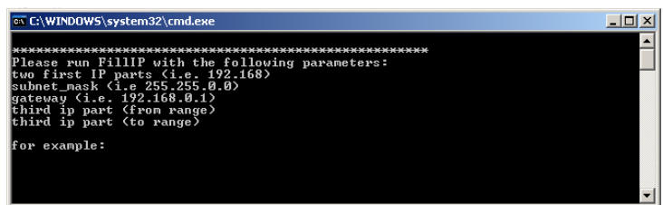

Working with HTTP Protocol
Website load testing usually means testing how typical user activities are handled by the system under test not in a single-user scenario but rather under heavy usage load. Using load testing, we can test the system’s performance, scalability and reliability, all in real-life simulated usage scenarios and patterns. A system’s performance is all about how fast it functions; its reliability is about how often it’s available (where a system might be unavailable due to a lack of a certain resource or because of a bug); and a
system’s scalability is about how these two factors (performance and reliability) change as the usage of the system increases.
WebLOAD was designed as a protocol-level load testing tool, enabling the QA
professional to "bombard" the system under test with protocol-level commands and transactions, simulating real usage of a large amount of users. The main and most important protocol for load testing Internet applications is the HTTP protocol.
WebLOAD supports the common HTTP methods and headers, as defined in the HTTP RFCs, most notably RFC 2616 (1999), that was defined by the W3C and the IETF.The WebLOAD DOM extension set includes objects, methods, properties, and functions that support designing tests at the HTTP protocol level. Using the DOM, functional and verification tests can be done, to check the system’s reliability under load.
This chapter documents the features that apply to QA professionals creating scripts based on the HTTP Protocol, where HTTP transactions and the responses they trigger are the focus of the test session. This chapter includes a few sample scripts that you can study to help learn the HTTP Protocol testing technique. The examples are fictitious, but you can copy the scripts and edit them for use in real WebLOAD tests. More sample scripts may be found on the WebLOAD Script Libraries, at http://www.webload.org/index.php?option=com_wrapper&Itemid=160.
Understanding the WebLOAD DOM Structure
For optimum website testing, WebLOAD extended the standard browser DOM with many features and functions that are critical to site testing and evaluation. The following figure, an extended version of the basic DOM hierarchy tree, highlights many of the added elements of the WebLOAD DOM hierarchy. The remainder of this chapter provides more detailed information about some of the special elements and features that WebLOAD added to the basic DOM model that are used when working in HTTP Protocol mode.

The preceding illustration highlights in bold the WebLOAD extensions used by WebLOAD when working with the Document Object Model.
Note: WebLOAD-specific objects are identified by the wl prefix.
The following table lists some of the extensions that WebLOAD has added to the standard DOM objects, properties, and methods.
| WebLOAD extensions | Description |
|---|---|
| Objects | |
| wlCookie | Sets and deletes cookies. |
| wlException | WebLOAD error management object. |
| wlGeneratorGlobal and wlSystemGlobal objects | Handles global values shared between script threads or Load Generators. |
| wlGlobals | Manages global system and configuration values. |
| wlHeader | Contains the key/value pairs in the HTTP command headers that brought the document. (Get, Post, etc.) |
| wlHtml | Retrieves parsed elements of HTTP header fields. |
| wlHttp | Performs HTTP transactions and stores configuration property values for individual transactions. |
| wlLocals | Stores local configuration property values. |
| wlMeta | Stores the parsed data for an HTML meta object. |
| wlOutputFile | Writes script output messages to a global output file. |
| wlRand | Generates random numbers. |
| wlSearchPair | Contains the key/value pairs in a document’s URL search strings. |
| wlTable, row, and cell objects | Contains the parsed data from an HTML table. |
| XML DOM objects | XML DOM object set that both accesses XML site information and generates new XML data to send back to the server for processing. |
| Properties | |
| wlSource | Contains the complete HTML source code of the frame, in a read- only string. |
| wlStatusLine | Contains the status line of the HTTP header, in a read-only string. |
| wlStatusNumber | Contains the HTTP status value, which WebLOAD retrieves from the HTTP header, in a read-only integer. |
| wlVersion | Contains the HTTP protocol version, which WebLOAD retrieves from the HTTP header, in a read-only string. |
| Methods | |
| wlGetAllForms | Retrieves a collection of all forms ( |
| wlGetAllFrames | Retrieves a collection of all frames in an HTML page, at any level of nesting. |
| wlGetAllLinks | Retrieves a collection of all links ( elements) in an HTML page and its nested frames. |
Using Multiple IP Addresses
WebLOAD enables the creation of a single test script that includes multiple IP addresses, simulating the behavior of actual users.
Note: Before you enable support of multiple IP addresses, you must first generate additional IP addresses on your machine to use when testing.
Enable the use of all available IP addresses through the property wlGlobals.MultiIPSupport. The values of MultiIPSupport are:
- false – Use only one IP address. (default)
- true – Use all available IP addresses.
Indicate whether WebLOAD should use the same IP or a different IP for every round, by setting the value of the wlGlobals.MultiIPSupportType property which supports the following values:
- PerClient – WebLOAD preserves the current behavior, meaning that there are different IPs per client but the same IP is used for all rounds. This is the default setting.
- PerRound – WebLOAD supports the use of a different IP from the pool per client, per round, until the pool is exhausted, after which it returns to the beginning.
The exact number of IPs that WebLOAD supports depends on the operating system being used:
- With Unix, WebLOAD uses the
gethostbyname()function to access the IP address. There is no limit to the number of IP addresses that WebLOAD supports. - With Windows, WebLOAD loads an SNMP agent dll file, through which WebLOAD accesses the IP information. The SNMP agent exists on all Windows versions since Win95 and NT, even if an SNMP agent is not installed. This method queries all of the IPs, one at a time, and places the result in a list maintained in the WebLOAD’s engine code. WebLOAD continues to go over the entire IP list, until it reaches the engine code’s limit of 100,000 IPs.
If for some reason the SNMP does not work, WebLOAD uses another method whose limitation is 35 IPs.
Generating IP Addresses in the script
After enabling the use of all available IP addresses, you can generate additional IP addresses on your machine by setting the TCP/IP properties through the Windows UI. For further instructions consult your system administrator. Alternatively, you can use the FillIP.bat file provided with WebLOAD, as described below.
To generate IP addresses in the script:
-
Locate the
FillIP.batfile in<WebLOAD directory>\bin. -
Run the batch file by entering the file name in the command line or double-clicking the file.
The command line window appears. 
-
Enter the
netshcommand to generate the list of IP addresses.FillIP IP\_prefix subnet\_mask gateway from to
The netsh command parameters are described in the following table:
| Parameter | Description |
|---|---|
| IP_prefix | The prefix used for all of the generated IP addresses. For example, if IP_prefix is 192.168 then the generated IP address structure is 192.168.xxx.xxx. |
| subnet_mask | The subnet_mask is matched with the IP address to determine the fourth section of the generated IP address, along with the gateway value. For example 255.255.0.0. |
| gateway | The gateway used for all of the generated IP addresses to determine the fourth section of the generated IP address, along with the subnet_mask value. For example, 192.168.0.1. |
| from to | Used to generate the third section in the IP address. For example, if from to is 1 24, then the generated IP addresses are all from xxx.xxx.1.xxx to xxx.xxx.24.xxx. |
Upon successful completion, the Command Line window returns OK. If an error is encountered (for example, an illegal IP address), the Command Line window returns details about the error.
For example, to generate approximately 6000 IP addresses, use the following command in the script:
FillIP 192.168 255.255.0.0 192.168.0.1 1 24
The following IP addresses are generated:
| 192.168.1.1 | 192.168.2.1 | … | 192.168.24.1 |
|---|---|---|---|
| 192.168.1.2 | 192.168.2.2 | … | 192.168.24.2 |
… 192.168.1.255 |
192.168.2.255 |
… |
192.168.24.255 |
Parsing Web Pages
Web testing sessions work with Web pages, by accessing a specified page and verifying that all operations are completed correctly. As part of the Web page access, downloaded Web pages are parsed and the data from each page stored in a logical structure. This section gives a brief overview of the parsing approach to a Web page.
Parsing and Navigating Nested Frames on a Dynamic HTML Page
The following script downloads a dynamic HTML page belonging to a retailer that advertises on the Internet. The second frame on the page offers bargain prices on three different items each hour. The script performs the following operations, some of which are marked in bold in the script code:
- Downloads the page including the nested frames.
- Retrieves the second frame.
- Searches the HTML source code of the second frame to find the
<TITLE>element. - Confirms that the title is "Offer of the Hour". (If it is not, the script displays an error message and stops the current round of the thread where the error occurred. The thread continues with the next round.)
- Randomly selects one of the first three links in the second frame.
- Follows the link.
Note: This script includes DOM objects that are not explained in this section. For more information about a specific object or usage, (such as
wlGlobals,wlRand, orwlHttp), see that object’s section in the WebLOAD JavaScript Reference Guide
function InitAgenda()
{
//Enable parsing of all links
wlGlobals.ParseLinks = true
//Enable downloading nested frames
wlGlobals.GetFrames = true
}
function InitClient()
{
//Initialize the random number generator with a
//different seed for each thread (ensures that each
//thread follows a different sequence of links)
wlRand.Seed(ClientNum)
}
//Main script Body
//Store the most recent download in document .wlSource
wlHttp.SaveSource = true
//Download the dynamic HTML page
wlHttp.Get("http://www.webloadmpstore.com/general_sample/frames/frames.htm")
//Retrieve the second frame
MyFrame = document.frames[1]
InfoMessage(MyFrame)
InfoMessage(MyFrame.document.wlSource)
//Confirm that the <TITLE> element of the frame is
//"Offer of the Hour". If it is not, display an error
//message and abort the current round.
//Remember to escape the slash in </TITLE>
// Using extractValue to catch the title
myTitle = extractValue( "<title>", "<\/title>", MyFrame.document.wlSource)
// will print the content of the title
InfoMessage (myTitle )
if (myTitle != "offer of the hour")
{
ErrorMessage("Thread " + ClientNum.toString() + ", Round " + RoundNum.toString() + ": Title is not ‘Offer of the Hour’ but is " + myTitle )
}
//Retrieve the URL of a randomly selected link
SelectedItem = wlRand.Select(0, 1, 2)
LinkUrl = MyFrame.document.links[SelectedItem].href InfoMessage(LinkUrl )
//Follow the link
wlHttp.Get(LinkUrl)
Using wlHtml to Follow a Dynamic Link
The third link on a company’s home page is an advertisement that links to one of several products. On successive accesses, the advertisement switches dynamically among the products.
The following WebLOAD script tests the time that a user would need to follow the link.
The script:
- Links to the home page and parses the HTML code.
- Retrieves the URL of the third link.
- Measures the time it takes WebLOAD to:
- Download the main page and, depending on the parameters, do any of the following:
- Download frames, images, tables, or whatever else has been specified.
- Download nested subframes, images, etc.
- Parse the document.
- Download the main page and, depending on the parameters, do any of the following:
In this script, WebLOAD displays two time statistics:
- The Round Time.
- The Link Time.
function InitAgenda()
{
//Set the default URL to the dynamic HTML home page
wlGlobals.Url = "http://www.ABCDEF.com"
//Parse links. Forms are not needed.
wlGlobals.ParseLinks = true
wlGlobals.ParseForms = false
}
//Main script
//Connect to the home page
wlHttp.Get()
// Retrieve the third link on the home page using the manual
// GetLinkByIndex() method.
// See IdentifyObject() for the dynamic ASM alternative
Link3 = wlHtml.GetLinkByIndex(3)
//Measure the time to connect to the link
SetTimer("Link Time")
wlHttp.Get(Link3.href)
SendTimer("Link Time")
Data Submission Properties
You may submit many types of data to an HTTP server in a Get, Post, or Head command. For example, you can submit a search string, the results of form fields, or a file. You may assign values to variable data stored in these collections using the wlSet method.
The wlHttp object provides the following collections to store the data that you want to submit:
FormDataDataDataFileHeader
At the time you first create your test script, you should decide which collection is most appropriate for your test session activities.
FormDatais the standard collection of field values, common to all HTML forms.Headeris the collection of header field values only.Dataand DataFile are both collections that hold sets of data.Datacollections are stored within the script itself, and are useful when you prefer to see the data directly.DataFilecollections store the data in local text files, writing only the name of the data file within the script itself, and are useful when you are working with large amounts of data, which would be too cumbersome to store within the script code itself.
Your script can work with both Data and DataFilecollections. Do not use both properties on the same object (a single HTTP request can use either Data or DataFile collections, but not both).
FormData
FormData is a collection containing form field values. WebLOAD submits the field values to the HTTP server when you call one of the following methods of the wlHttp object:
Get()Post()Head()
The collection indices are the field names (HTML name attributes). Before you call wlHttp.Post(), set the value of each element to the data that you want to submit in the HTML field. The fields can be any HTML controls, such as:
- buttons
- text areas
- hidden controls
Generally, when an HTTP client (Microsoft Internet Explorer/Firefox or WebLOAD) sends a URL-encoded request to the server, the data is HTTP encoded. Different clients – browsers or JavaScript functions such as Ajax – perform encoding with slight differences. Encoding form data replaces special characters such as blanks, ">" signs, and so on, with "%xx" (an ASCII hexa number). For example, a space is encoded as "%20" or as a "+".
The Get() method converts a URL address to contain only allowed URL characters. The Post() method converts the content of forms to contain only allowed URL characters. Forms contain one of the following content types:
FormData ["key"]– a valueData []– raw informationDataFile []– both a value and raw information
Turn off the encoding when the script sends large requests that have no data that needs to be encoded. This improves performance as it bypasses the scanning and reformatting of the request buffer. You can enable or disable encoding, by accessing the HTTP Parameters tab in the Current or Default Project Options dialog box, in WebLOAD Recorder. Check or uncheck Encode Form Data to enable or disable encoding.
Getting FormData Using Get
You can get form data using a Get() call. For example:
wlHttp.FormData["FirstName"] = "Bill"
wlHttp.FormData["LastName"] = "Smith"
wlHttp.FormData["EmailAddress"] = "bsmith@ABCDEF.com"
[wlHttp.Get("http://www.ABCDEF.com/submit.cgi")](http://www.ABCDEF.com/submit.cgi)
WebLOAD appends the form data to the URL as a query statement, using the
following syntax:
http://www.ABCDEF.com/submit.cgi
?FirstName=Bill&LastName=Smith
&EmailAddress=bsmith@ABCDEF.com
Submitting FormData Using Post()
Suppose you are testing an HTML form that requires name and email address data. You need to submit the form to the submit.cgi program, which processes the data.
You can code this in the following way:
wlHttp.FormData["FirstName"] = "Bill"
wlHttp.FormData["LastName"] = "Smith"
wlHttp.FormData["EmailAddress"] = "bsmith@ABCDEF.com"
wlHttp.Post("http://www.ABCDEF.com/submit.cgi")
The Post() call connects to submit.cgi and sends the FormData fields. In the above example, WebLOAD would post the following fields:
FirstName=Bill
LastName=Smith
EmailAddress=bsmith@ABCDEF.com
Submitting FormData with Missing Fields
You can use the string "$WL$EMPTY$STRING$" to represent a missing name or value (an empty string) in a FormData field. You can use the string "$WL$VOID$STRING$" to represent a token that is posted alone, without even an equal sign.
The following lines illustrate the syntax:
wlHttp.FormData["FirstName"] ="$WL$EMPTY$STRING$"
wlHttp.FormData["$WL$EMPTY$STRING$"] = "Smith"
wlHttp.FormData["EmailAddress"] = "$WL$VOID$STRING$"
wlHttp.Post("http://www.ABCDEF.com/submit.cgi")
In this example, the Post() call sends the following data:
FirstName=
=Smith
EmailAddress
A Get() call using the same form data would send:
http://www.ABCDEF.com/submit.cgi?FirstName=&=Smith&EmailAddress
Note: JavaScript supports two equivalent notations for named collection elements:
FormData.FirstNameFormData["FirstName"]The latter notation also supports spaces in the name, for example, FormData["First Name"].
Using FormData with Data Files
You can coordinate the FormData property with input data files. In this case, one of the FormData fields stores identifying information about the data file, including the name of the file and the type of data in the file (text, binary, bmp, etc.).
The following lines illustrate the syntax:
wlHttp.FormData["InputFile.wlFile-Name"] = "myFavoritePicture"
wlHttp.FormData["InputFile.wlContent-Type] = "bmp"
The following script fragment illustrates the FormData properties documented in this section. The input file lines are marked in bold.
...
/***** WLIDE - URL : http://ws3/webft/fullform.asp - ID:4 *****/
wlGlobals.UserAgent = "Mozilla/4.0 (compatible; MSIE 7.0;
Windows NT 5.1; Trident/4.0; .NET CLR 2.0.50727; .NET CLR 3.0.4506.2152; .NET CLR 3.5.30729; .NET CLR 1.1.4322)"
wlHttp.Header["Referer"] = "http://ws3/webft/index.asp"
wlHttp.Get("http://ws3/webft/fullform.asp")
// END WLIDE
/***** WLIDE - Sleep - ID:5 *****/
Sleep(18890)
// END WLIDE
/***** WLIDE - URL : [http://ws3/webft/fullform.asp ](http://ws3/webft/fullform.asp)- ID:6 *****/
wlGlobals.UserAgent = "Mozilla/4.0 (compatible; MSIE 7.0;
Windows NT 5.1; Trident/4.0; .NET CLR 2.0.50727; .NET CLR
3.0.4506.2152; .NET CLR 3.5.30729; .NET CLR 1.1.4322)"
wlHttp.Header["Referer"] = "http://ws3/webft/fullform.asp"
wlHttp.FormdataEncodingType = 1
wlHttp.ContentType = "application/x-www-form-urlencoded"
wlHttp.FormData["text1"] = "user1"
wlHttp.FormData["password1"] = "password1"
wlHttp.FormData["textarea1"] = "some text"
wlHttp.FormData["checkbox1"] = "second value"
wlHttp.FormData["select1"] = "first select value" wlHttp.FormData["submit2"] = "Submit2"
wlHttp.Post("http://ws3/webft/fullform.asp")
// END WLIDE
...
/***** WLIDE - URL : http://ws3/upload/ssl-upload.html - ID:16*****/
wlGlobals.UserAgent = "Mozilla/4.0 (compatible; MSIE 7.0;
Windows NT 5.1; Trident/4.0; .NET CLR 2.0.50727; .NET CLR
3.0.4506.2152; .NET CLR 3.5.30729; .NET CLR 1.1.4322)"
wlHttp.Get("http://ws3/upload/ssl-upload.html")
// END WLIDE
/***** WLIDE - Sleep - ID:17 *****/
Sleep(22999)
// END WLIDE
/***** WLIDE - URL : http://ws3/upload/ssl-upload-handler.php -ID:18 *****/
wlGlobals.UserAgent = "Mozilla/4.0 (compatible; MSIE 7.0; Windows NT 5.1; Trident/4.0; .NET CLR 2.0.50727; .NET CLR 3.0.4506.2152; .NET CLR 3.5.30729; .NET CLR 1.1.4322)"
wlHttp.Header["Referer"] = "http://ws3/upload/ssl-upload.html"
wlHttp.EncodeFormdata = false;
wlHttp.ContentType = "multipart/form-data"
wlHttp.FormData["text"] = "abcd"
wlHttp.FormData["uploadFile[].wlFile-Name"] = "a.txt"
wlHttp.FormData["uploadFile[].wlContent-Type"] = "text/plain"
wlHttp.FormData["uploadFile[].wlFile-Name"] = "$WL$EMPTY$STRING$"
wlHttp.FormData["uploadFile[].wlContent-Type"] = "application/octet-stream"
wlHttp.FormData["uploadFile[].wlFile-Name"] = "$WL$EMPTY$STRING$"
wlHttp.FormData["uploadFile[].wlContent-Type"] = "application/octet-stream"
wlHttp.FormData["submit"] = "Submit Query"
wlHttp.Post("http://ws3/upload/ssl-upload-handler.php")
// END WLIDE
Data
Data is a string to be submitted in an HTTP Post command. The Data property has two subfields:
Data.Type—the MIME type for the submissionData.Value—the string to submit You can use Data in two ways:- As an alternative to
FormDataif you know the syntax of the form submission. - To submit a string that is not a standard HTML form and cannot be represented by
FormData.
Thus the following three code samples are equivalent:
//Sample 1
wlHttp.Data.Type =
"application/x-www-form-urlencoded"
wlHttp.Data.Value =
"SearchFor=icebergs&SearchType=ExactTerm"
wlHttp.Post("http://www.ABCDEF.com/query.exe")
//Sample 2
wlHttp.FormData.SearchFor = "icebergs"
wlHttp.FormData.SearchType = "ExactTerm"
wlHttp.Post("http://www.ABCDEF.com/query.exe")
//Sample 3
wlHttp.Post
("http://www.ABCDEF.com/query.exe" + "?SearchFor=icebergs&SearchType=ExactTerm")
Note:
DataandDataFileare both collections that hold sets of data.Datacollections are stored within the script itself, and are useful when you prefer to see the data directly.DataFilecollections store the data in local text files, and are useful when you are working with large amounts of data, which would be too cumbersome to store within the script code itself. When working withDataFilecollections, only the name of the text file is stored in the script itself.
Your script can work with both Data and DataFile collections. Do not use both properties for the same lHTTP object (a single HTTP request can use either Data or DataFile properties, but not both). When you record your script with the WebLOAD Recorder, use the Post Data tab in the Recording and Script Generation Options dialog box to define the default behavior for submitting content types. The default behaviors are Data and DataFile, although you can edit these definitions and add additional predefined behaviors for other content types as well.
DataFile
DataFile is a file to be submitted in an HTTP Post command. WebLOAD sends the file using a MIME protocol.
DataFile has two subfields:
-
DataFile.Type—the MIME type -
DataFile.Filename—the name of the file, for example:"c:\\MyWebloadData\\BigFile.doc"
WebLOAD sends the contents of the file stored in
Header
A collection of HTTP header fields that you want to send in a Get(), Post(), or Head() call.
By default, WebLOAD sends the following header in any HTTP command:
Accept: */*
User-Agent: Mozilla/4.0 (compatible; MSIE 6.0; Windows NT 5.0) Host: <host>
Connection:Keep-Alive
Here, <host> is the host name to which you are connecting, for example:
www.ABCDEF.com:81.
By default, the Referer header is also recorded and sent, where it is being used by the Web server.
You may reset these properties, for example, as follows:
wlHttp.UserAgent = "Mozilla/4.03 [en] (WinNT; I)"
Note: The user-agent header is defined in WebLOAD Recorder. Access Tools Default or Current Project Options, select the Browser Parameters tab, and edit the user-agent field.
Alternatively, you can use the Header property to override one of the default header fields. For example, you can redefine the following header field:
wlHttp.Header["user-agent"] = "Mozilla/4.03 [en] (WinNT; I)"
Additional header fields are recorded and sent according to the checked Record Headers options in the Script Content tab of the Recording and Script Generation Options dialog box (in WebLOAD Recorder):
Accept-Language: en-us
UA-CPU: x86
Pragma: no-cache
Note: The headers
If-Modified-SinceandIf-None-Matchedwill be commented out to overcome the situation where recorded links were fetched from the browser’s cache during the recording. The request headerAccept-Encode: gzipwill also be commented out, to ensure correct behavior.
When the Record Custom Headers option is enabled, WebLOAD records any headers that are not explicitly defined in the RFC, such as the SOAP Action header. This option is not selected by default.
Note: Any information set using the
wlHttp.Headerproperty takes priority over any defaults set using the global, local, or other wlHttp properties. If there is any discrepancy between the document header information and the HTTP values, WebLOAD will work with the information found in thewlHttp.Headerproperty while also issuing a warning to the user.
WebLOAD offers a simple way to reset configuration properties using the Options tab of the Session Control menu. Resetting configuration properties as you run and rerun various testing scenarios allows you to fine tune your tests to match your exact needs at that moment. However, that this real-time configuration setting will be overruled by any configuration properties that are explicitly set by wlHttp.Header within your test scripts. For greatest reliability and flexibility, WebLOAD recommends that you set header properties using the more general wlGlobals, wlLocals, and wlHttp object properties, fine-tuning your test sessions using the WebLOAD Session menu.See Rules of Scope for Local and Global Variables , for more information on precedence and priority in script variables. Remember that you cannot override the host header or set a cookie header using the Header property.
Erase
Clear the WebLOAD properties of a wlHttp object after each Get(), Post(), or Head() call.
WlHttp.Erase is a read/write property. The default value is true. This section will describe the implications of each setting.
Erase=true (default)
When Erase is set to true, WebLOAD automatically erases all wlHttp property values after each HTTP access. You must reassign any properties you need before the next HTTP access. For this reason, assign the properties of wlHttp only in the main script, not in InitClient(), so they will be reassigned in every round.
Thus if Erase is set to true the following script is incorrect. In this script, the wlHttp properties are assigned values in InitClient(). The script would connect to the Url and submit the FormData only in the first round. After the first Post() call, the Url and FormData property values are erased, so WebLOAD cannot use them in subsequent rounds.
The following script displays the incorrect method of assigning the wlHttp properties:
function InitClient() { //Wrong!
wlHttp.Url =
"http://www.ABCDEF.com/products.exe"
wlHttp.FormData["Name"] = "John Smith"
wlHttp.FormData["Product Interest"] = "Modems"
}
//Main script
wlHttp.Post()
Get(), Post(), or Head() call:
//Main script //OK
wlHttp.Url =
"http://www.ABCDEF.com/products.exe"
wlHttp.FormData["Name"] = "John Smith"
wlHttp.FormData["Product Interest"] = "Modems"
wlHttp.Post()
Alternatively, you could assign values to wlLocals properties, which are not erased:
function InitClient() { //OK
wlLocals.Url =
"http://www.ABCDEF.com/products.exe"
wlLocals.FormData["Name"] = "John Smith"
wlLocals.FormData["Product Interest"] =
"Modems"
}
//Main script
wlHttp.Post()
Erase=false
You may set Erase to false to prevent erasure. For example, if for some reason you absolutely had to assign values to the wlHttp properties in the InitClient() function of the script, change the value of the Erase property to false. If Erase is false, the properties retain their values through subsequent rounds.
Thus another way to correct the preceding example is to write:
function InitClient() { //OK
wlHttp.Erase = false
wlHttp.Url = "http://www.ABCDEF.com/products.exe"
wlHttp.FormData["Name"] = "John Smith"
wlHttp.FormData["Product Interest"] = "Modems"
}
//Main script
wlHttp.Post()
User-defined properties are not linked to the wlHttp.Erase property and will not be erased automatically by WebLOAD. The only way to reset or erase user-defined properties is for the user to set the new values explicitly.
Posting form Data Using Elements
Note: This script includes DOM objects that are not explained in this section. For more information about a specific object or usage, (such as wlGlobals or wlHttp), see that object’s section in the WebLOAD JavaScript Reference Guide.
The home page of a company displays the following form, where a user can specify interest in different products.

The HTML code for the form is:
<FORM action="http://www.ABCDEF.com/FormProcessor.exe"
method="post">
<P>Your name: <INPUT type="text" name="yourname">
<SELECT name="interest">
<OPTION selected>Modems</OPTION>
<OPTION>CD-ROMs</OPTION>
</SELECT>
<INPUT type="submit" value="Send">
</FORM>
A script can download the form as follows:
function InitAgenda() {
wlGlobals.Url = "http://www.ABCDEF.com"
wlGlobals.ParseForms = true
}
wlHttp.Get()
WebLOAD parses the HTML code and creates an elements collection containing the first two form elements (the text box and the drop-down list). WebLOAD does not include the third element (the Send button) in the collection because it does not have a name attribute.
This is a listing of the elements collection:
document.forms[0].elements[0].name = "yourname"
document.forms[0].elements[0].type = "text"
document.forms[0].elements[0].value = ""
document.forms[0].elements[1].name = "interest"
document.forms[0].elements[1].type = "SELECT"
document.forms[0].elements[1].selectedindex = 0
document.forms[0].elements[1].options[0].text = "Modems"
document.forms[0].elements[1].options[0].value = "Modems"
document.forms[0].elements[1].options[0].selected = true
document.forms[0].elements[1].options[1].text = "CD-ROMs"
document.forms[0].elements[1].options[1].value = "CD-ROMs"
document.forms[0].elements[1].options[1].selected = false
The script can use the above data to post the form back to the server. The following code illustrates how the script might do this.
MyArray = document.forms[0].elements i = 0
while (i < MyArray.length) {
switch MyArray[i].type {
case "text" :
//Retrieve the default value of a text box
wlHttp.FormData[[MyArray[i].name] = MyArray[i].value]
break
case "SELECT"
//Retrieve the first option in a drop-down list
wlHttp.FormData[MyArray[i].name]=MyArray[i].options[0].value
break
}
i++
}
//Post the data to the form server
wlHttp.Post(document.forms[0].action)
Managing Cookies through the wlCookie Object
The wlCookie Object
The wlCookie object sets and deletes cookies. These activities may be required by an HTTP server.
Note: You may use the methods of
wlCookieto create as many cookies as needed. For example, each WebLOAD client running a script can set its own cookie identified by a unique name.
wlCookie is a local object. WebLOAD automatically creates an independent wlCookie object for each thread of a script. You cannot manually declare wlCookie objects yourself. See the WebLOAD JavaScript Reference Guide for a complete syntax specification for the wlCookie object and its methods.
How WebLOAD Works with Cookies
WebLOAD always accepts cookies that are sent from a server. When WebLOAD connects to a server, it automatically submits any cookies in the server’s domain that it has stored. By default, WebLOAD clears the cookie cache after every round.
The wlCookie object lets you supplement or override this behavior in the following ways:
- A thread can create its own cookies.
- A thread can delete cookies that it created.
Except for the above, WebLOAD does not distinguish in any way between cookies that it receives from a server and those that you create yourself. For example, if a thread creates a cookie in a particular domain, it automatically submits the cookie when it connects to any server in the domain.
wlCookie Methods
The wlCookie object works with the following methods:
ClearAll()—Delete all cookies set by wlCookie in the current thread.Delete()—Delete the cookie identified by the method parameters. The cookie must have been previously created bywlCookie.Get()—Returns the cookie value. If there is more than one cookie with the same parameters it returns the first cookie.Set()—Creates a cookie. You can set an arbitrary number of cookies in any thread. If you set more than one cookie applying to a particular domain, WebLOAD submits them all when it connects to the domain.
Note: Set cookies within the main script of the script. WebLOAD deletes all the cookies at the end of each round. If you wish to delete cookies in the middle of a round, use the
Delete()orClearAll()method.
Example: using a cookie
Cookies are used by applications to store the application requests on the client side. This enables the client to perform a one-time application request and from then on the request information is retrieved from the client’s cookies.
//Request information entered into the application
wlHttp.ContentType = "application/x-www-form-urlencoded"
wlHttp.FormData["username"] = "zadp10"
wlHttp.FormData["password"] = "Start100"
wlHttp.FormData["submit1"] = "Login"
//Setting the cookie
wlCookie.Set("UserID", "zapd10", "www.abcdef.net", "/", "Sun, 19- Jun-2011 17:29:00 GMT")
//WebLOAD submits the cookie
wlHttp.Post("https://www.abcdef.net/default.aspx")
//Getting the cookie
CookieValue = wlCookie.Get("UserID")
//The value returned in CookieValue is "zapd10"
In some cases it is also necessary to delete the cookie settings. You can do this by entering:
Handling Binary Data
WebLOAD supports the simulation of binary data sent from the browser to the server. Binary data is handled specially, since it cannot be displayed as JavaScript literals in the script, unlike other types of data that can be displayed, such as numbers or text.
Recording Binary Data
WebLOAD supports recording binary data in a script in one of the following ways:
- Recording binary data as a data file, which is external to the script.
- Encoding binary data in the script, so that you can view and edit the data.
Recording Binary Data as a Data File
Modifying the script Options settings in the WebLOAD Recorder enables writing binary data into a data file, which is stored locally. When working with data files, only the name of the file is stored in the script itself.
Recording binary data as a data file, enables WebLOAD to simulate sending binary data to the application, although the data itself cannot be edited in the script.
To record binary data as a data file:
-
In WebLOAD Recorder, select Tools Recording and Script Generation Options. The Recording and Script Generation Options dialog box appears.
-
In the Recording and Script Generation Options dialog box select the Post Datatab.
The Post Data tab appears.

-
In the Add New Type field, enter the binary content-type, such as application/x-amf, which is used for binary content generated by a Flash application.
-
Click As DATAFILE.
The binary content-type is added to the DATAFILE block list.
-
In the Recording and Script Generation Options dialog box, select the Content Types tab.
The Content Types tab appears.

-
Ensure that the appropriate binary content-type appears in the Recorded Types area. If the content does not appear, add the binary content type in the Add new content type field and click Add.
After setting the Record Option settings, binary data is stored in a local data file and the name of the file appears in the script.
The following sample script demonstrates how WebLOAD records binary data as a data file:
function InitAgenda()
{
CopyFile("wl2288601006.dat","wl2288601006.dat")
}
wlGlobals.GetFrames = false
wlHttp.Get("http://www.webloadmpstore.com/flex/bin/Sample.html")
Sleep(9056)
wlHttp.Header["Referer"] =
"http://www.webloadmpstore.com/flex/bin/Shop.swf"
wlHttp.Header["Content-type"] = "application/x-amf"
wlHttp.Header["Content-length"] = "58"
wlHttp.DataFile["Type"] = "application/x-amf"
wlHttp.DataFile["Filename"] = "wl2288601006.dat"
wlHttp.Post("http://www.webloadmpstore.com/flashservices/gateway.php")
Encoding Binary Data in the script
Modifying the script Options settings in the WebLOAD Recorder enables the encoding of binary data in the script during the recording. Once recorded, the script can be edited, parameterized, and load tested as a regular script.
To enable encoding binary data in the script:
-
In WebLOAD Recorder, select the Tools Recording and Script Generation Options dialog box.
The Recording and Script Generation Options dialog box appears.
-
In the Recording and Script Generation Options dialog box select the Script Generation tab.
The Script Generation tab appears.

-
Select the Encode binary data checkbox.
This enables the user to view and parameterize the binary content.
-
In the Recording and Script Generation Options dialog box, select the Post Data tab.
The Post Data tab appears.
-
In the Add New Type field, enter the binary content-type, such as
application/x-amf, which is used for binary text generated by a Flash application. -
Click As DATA. The binary content-type is added to the DATA block list.
-
In the Recording and Script Generation Options dialog box, select the Content Types tab.
The Content Types tab appears (see the Figure).
-
Ensure that the appropriate binary content-type appears in the Recorded Types area. If the content does not appear, add the binary content type in the Add new content type field and click Add.

After setting the Record Option settings, when binary data is recorded and encoded in a script, wlHttp.EncodeRequestBinaryData = true is automatically added to the script. This encodes the binary data into the following usable format:
wlHttp.Data["Value"] = "%00%00%00%00%00%01%00/com.oreilly.frdg.SearchProducts.getSearch Result%00%02/1%00%00%00%18%0a%00%00%00%01%03%00%06search%02%00%0 4wood%00%00%09"
The following sample script demonstrates how WebLOAD handles binary data encoded in the script:
function InitAgenda()
{
IncludeFile("wlamf.js",WLExecuteScript);
}
wlGlobals.GetFrames = false
wlHttp.EncodeRequestBinaryData = true
wlGlobals.UserAgent = "Mozilla/4.0 (compatible; MSIE 8.0; Windows NT 5.1; Trident/4.0; .NET CLR 2.0.50727; .NET CLR 3.0.4506.2152; .NET CLR 3.5.30729; .NET CLR 1.1.4322)"
wlHttp.Get("http://www.webloadmpstore.com/flex/bin/Sample.html")
wlHttp.EncodeRequestBinaryData = true
wlHttp.Header["Referer"] =
"http://www.webloadmpstore.com/flex/bin/Sample.html"
wlHttp.Get("http://www.webloadmpstore.com/flex/bin/history.htm")
wlHttp.EncodeRequestBinaryData = true
wlHttp.Header["Referer"] =
"http://www.webloadmpstore.com/flex/bin/history.htm"
wlHttp.Get("http://www.webloadmpstore.com/flex/bin/history.swf")
wlHttp.EncodeRequestBinaryData = true
wlHttp.Header["Referer"] =
"http://www.webloadmpstore.com/flex/bin/Sample.html)[ttp://www.webloadmpstore.com/flex/bin/Sample.html"
wlHttp.Get("http://www.webloadmpstore.com/flex/bin/Shop.swf")
wlHttp.EncodeRequestBinaryData = true
wlHttp.Header["Referer"] =
"http://www.webloadmpstore.com/flex/bin/Shop.swf"
wlHttp.Data["Type"] = "application/x-amf"
wlHttp.Data["Value"] =
"%00%03%00%00%00%01%00%15talkback.returnString%00%02/1%00%00%00% 15%0a%00%00%00%02%02%00%06George%02%00%04Bush"
wlHttp.Post("http://www.webloadmpstore.com/flashservices/gateway.php")
Handling Authentication in the Script
WebLOAD supports working with scripts containing Basic, NTLM, and Kerberos user authentication methods.
WebLOAD handles authentication in playback in the following way:
- WebLOAD sends a regular request with no request for authentication, to which the server responds with an "unauthorized" error (401), and a prompt to enter a username and password.
-
If WebLOAD is using:
- Basic authentication, WebLOAD encrypts the username and password in
wlHttp.UsernameandwlHttp.Password, and makes a request. - NTLM authentication, WebLOAD sets the following:
wlGlobals.AuthType = "NTLM", whereNTLMis the default value if no authentication type is specified. - Kerberos authentication, WebLOAD sets the following:
wlGlobals.AuthType = "Kerberos".
wlGlobals.KDCServer = <server name>. If no value is specified for KDCServer, the authentication type is automatically assumed to beNTLM, even if theAuthTypeisKerberos. - Basic authentication, WebLOAD encrypts the username and password in
The following examples demonstrate the authentication processes in WebLOAD.
Kerberos authentication:
wlGlobals.AuthType = "Kerberos"
wlGlobals.KDCServer = "mulier.qalab.internal"
wlHttp.NTPassWord = "Buga859"
wlHttp.NTUserName = "qalab.internal\\test"
wlHttp.Get("<http://mulier.qalab.internal/>")
NTLM authentication:
wlGlobals.AuthType = "NTLM"
wlHttp.NTPassWord = "Buga859"
wlHttp.NTUserName = "qalab.internal\\test"
wlHttp.Get("<http://mulier.qalab.internal/>")
OR
wlHttp.NTPassWord = "Buga859"
wlHttp.NTUserName = "qalab.internal\\test"
wlHttp.Get("<http://mulier.qalab.internal/>")
Basic authentication:
wlHttp.PassWord = "Buga859"
wlHttp.UserName = "test"
wlHttp.Get("<http://mulier.qalab.internal/>")